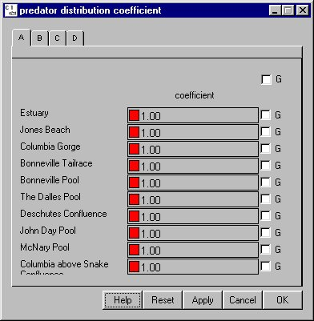

Predator Distribution Coefficient
Selecting Reservoir Predator Distribution Coefficient opens a window for setting the predator distribution coefficient of the predator density/volume interaction for each river segment. The main purpose of the predator density/volume interaction is to properly scale the effect of initial predator densities on predation rate during reservoir drawdown. To use these parameter values during a run, turn on predator density / volume interaction in RunRuntime Settings.
Predator Distribution Coefficient opens a window for setting the predator distribution coefficient of the predator density/volume interaction for each river segment. The main purpose of the predator density/volume interaction is to properly scale the effect of initial predator densities on predation rate during reservoir drawdown. To use these parameter values during a run, turn on predator density / volume interaction in RunRuntime Settings.
This is a Slider Input window. Click on the letter tabs to page through the Reach list.

Predator Distribution Coefficient window